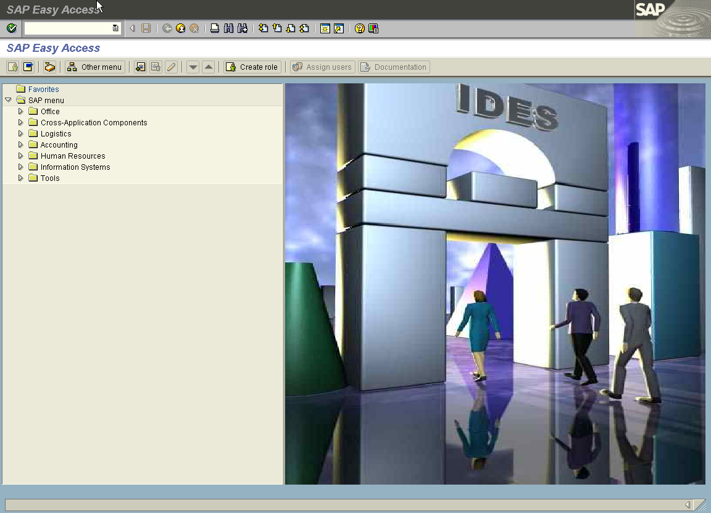
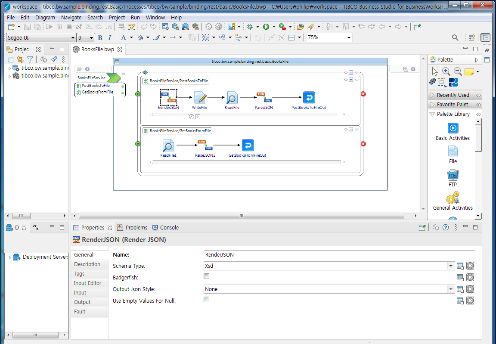

1. 한눈에 보기
이 데모는 금융사의 실제 운영 환경을 본떠, 마이크로서비스와 레거시가 섞인 시스템을 AIOps로 운영한다. 최신 서비스와 오래된 기간계가 한데 돌아가는 현실을, 하나의 그림으로 관측하고 조치하는 모습을 보여준다.
- 섞인 구성 — 다수의 마이크로서비스 + IBM CICS·SAP·TUXEDO 기반 서비스.
- 하나의 온톨로지 — 서비스와 리소스를 묶어 문제의 원인을 분석한다.
- 두 가지 운영 — AI가 맡는 자율 운영과, 사람이 보는 직접 운영을 모두 지원한다.
2. 구성 — 마이크로서비스와 레거시, 쿠버네티스 위에서
서비스는 종류가 섞여 있지만, 모두 쿠버네티스(k8s) 위에서 작동한다.
| 구성 요소 | 설명 |
|---|---|
| 마이크로서비스 | 쿠버네티스에서 도는 다수의 현대적 서비스 |
| IBM CICS | 기간계 트랜잭션을 처리하는 메인프레임 서비스 |
| SAP | 핵심 업무를 담당하는 ERP 계열 서비스 |
| TUXEDO | 분산 트랜잭션을 처리하는 미들웨어 서비스 |
| 쿠버네티스 | 이 모든 서비스가 올라가 작동하는 실행 기반 |





3. 온톨로지 — 서비스와 리소스를 결합한다
온톨로지는 서비스(무엇을 하는가)와 리소스(어디서 도는가)를 한데 묶는다. 그 위에서 운영 중 드러나는 문제의 원인을 분석한다.
- 지연 — 응답이 느려지는 구간을 찾는다.
- 병목 — 흐름이 막히는 지점을 짚는다.
- 부족 — 자원이 모자라는 곳을 드러낸다.
- 포화 — 한계에 다다른 리소스를 가려낸다.
4. 자율 운영 — 워크플로우와 추적
근본 원인 분석은 자율 운영으로 처리된다. 사람이 일일이 쫓지 않아도, 정해진 절차가 스스로 돌며 원인을 찾고 조치까지 이어간다.
- 워크플로우 — 진단과 조치 절차를 자동으로 밟는다.
- 추적(Trace) — 서비스 사이를 오간 호출을 따라가 근거를 만든다.
5. 사람이 보는 운영 — 이상탐지와 채팅
사람이 직접 운영할 때는, 먼저 이상탐지가 징후를 알리고 채팅으로 상황을 묻고 답한다. 자율 운영과 직접 운영은 서로 대체가 아니라, 상황에 맞게 함께 쓰인다.
| 구분 | 자율 운영 | 사람 운영 |
|---|---|---|
| 방식 | 워크플로우 + 추적 | 이상탐지 + 채팅 |
| 하는 일 | 근본 원인 분석과 조치를 자동으로 | 징후를 먼저 포착하고, 대화로 진단 |
| 사람의 역할 | 승인 여부만 결정 | 직접 묻고 판단 |
마이크로서비스와 레거시를 가리지 않고 하나의 온톨로지로 묶어, 지연·병목·부족·포화의 원인을 분석한다. 자율 운영은 워크플로우와 추적으로, 직접 운영은 이상탐지와 채팅으로 함께 돕는다.